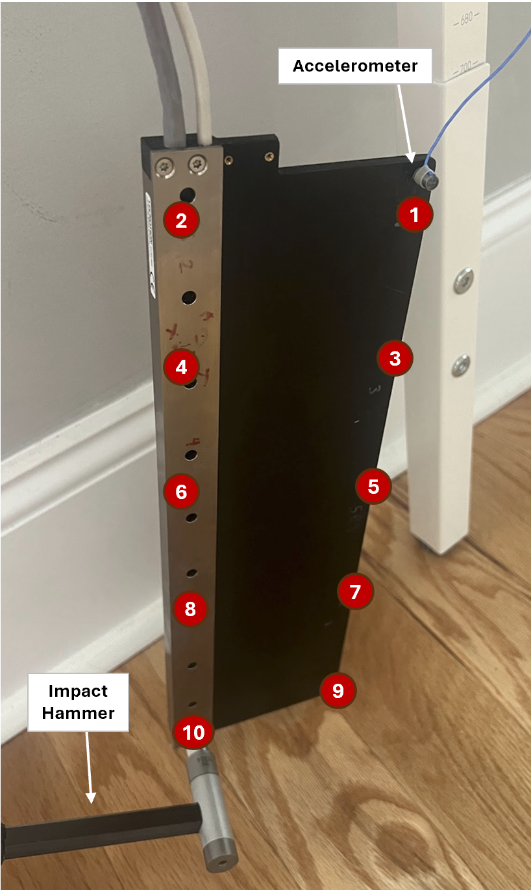
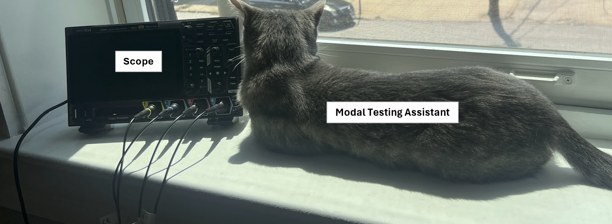
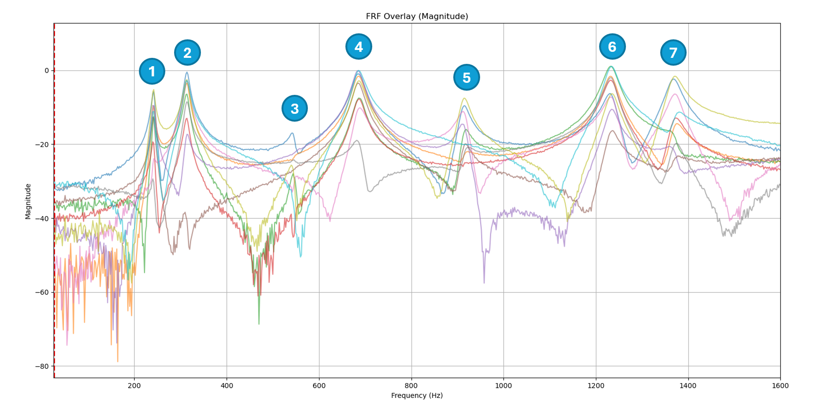

Low-Cost Experimental Modal Analysis of Tecnotion UX9S Coil Unit
Updated 09-27-2026
This web page describes experimental modal analysis results of a Tecnotion UX9S linear motor coil unit. Used equiment, a low-cost oscilloscope, and (free) AI-model written software were used to collect the data which makes this low cost compared to commercial solutions
Experimental structural dynamics measurements are useful for R&D/vibrations/FEM correlation work in a variety of engineering fields such as semiconductor capital equipment, machine tool, rotating turbo-machinery, air/spacecraft, automotive/NVH
Experiment Setup
A free-free boundary condition was simulated by hanging the coil from its power cable per the photo
A PCB Piezotronics 086C01 impact hammer was used to tap the coil at point #101 and measure impact force
A PCBPiezotronics 352A10 accelerometer was used to measure acceleration, it was moved between points #101 to #110. Roving accelerometer was chosen instead of (faster) roving hammer test because double-hits were very difficult to avoid on the lightweight epoxy section of the coil with the impact hammer used
A home-made IEPE signal conditioning box and BK precision 1760A linear DC power supply were used to power the IEPE sensors with 2mA of current and 0.8Hz HPF -3dB point
A Rigol MHO934 digital oscilloscope was used to record the two waveforms (triggered on the impact hammer) in "hi-res" mode
Python data collection, tagging, averaging and post-processing software was written using "Google Gemini 3.6 Flash AI model"


Experiment Results: Overlaid FRFs (units g/N)

The first few natural frequencies of this specific coil unit are:
- 237.8Hz Bending
- 308.8Hz Torsion
- 531.5Hz ???
- 676.5Hz Torsion
- 913.3Hz Epoxy/copper higher order
- 1232Hz Higher order
Comment: first few resonances appear lightly damped ~1-1.5%
Experiment Results: ODS Animations
Comment: resonances >900Hz likely need more points to resolve exact shapes